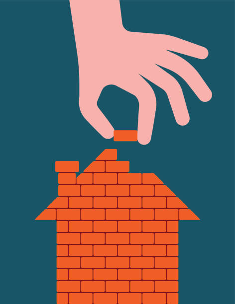

PILAR UNO
Los cimientos: en destaca es en que son fundamentales para la salud física como
Para los valores personales
No cambiaria nada por que creo que es de suma importancia ese aspecto en el cuerpo y en la persona.
Me gustaría fortalecer la capacidad de adaptación y resilencia y ¿Por qué? Vivimos en un mundo en constante y enfrentándonos a diversos desafíos a lo largo de nuestra vida.
Las paredes: en lo que desctaca es en que brinda protección en el cuerpo y pueden representar barreras emocionales en las personas
No cambiara nada por que destaca de manera concisa y clara las funciones de las paredes tanto en cuerpo como en las personas
Me gustaría fortalecer la empatía ¿Por qué? Nos permite comprender y conectar con los demás, fermentado relaciones mas positivas y compresivas
Las ventanas: lo que destaca es que en el cuerpo nos permiten percibir el mundo exterior, mientras que en las personas representan la apertura y vulnerabilidad para establecer relaciones auténticas
No cambiaria nada ya que aclara que las funciones de las ventanas tanto en el cuerpo como en las personas
Me gustaría fortalecer la resiliencia ¿Por qué? Nos permite superar desafíos
y adversidades de manera efectiva, adaptándonos y creciendo a partir de ellos
Las puertas: lo que destaca es que en el cuerpo permiten el paso y regulación, mientras que en las personas representan establecer límites saludables en las relaciones
No cambiaria nada ya que aclara las funciones de las puertas tanto en el cuerpo como en las personas.
Me gustaría fortalecer la capacidad de escucha activa porque nos permite entender mejor a los demás, fomentar la comunicación efectiva y construir relaciones más sólidas
El techo: lo que destaca en el cuerpo es que nos protege de los elementos externos y nos brinda seguridad. En cuanto al techo en la persona, podría referirse a la capacidad de una persona para alcanzar metas y objetivos en su vida.
No cambiaría nada ya que animaría a las personas a soñar más y tener metas más grandes.
Me gustaría fortalecer la creatividad en las personas, porque les permitiría encontrar soluciones innovadoras a los problemas y expresarse de manera única en diferentes aspectos de la vida.

PILAR DOS
El techo me hace sentir mas segura ¿Por qué? me daría la confianza de poder encontrar nuevas formas de abordar situaciones y resolver problemas, lo que te brindaría una sensación de control y adaptabilidad ante los desafíos.

PILAR TRES
En lo cimientos me veo como solidable y estable.
En las paredes me veo como alguien que se protege y establece limites.
En las ventanas me veo como alguien curioso y abierta a nuevas experiencias.
En las puertas me veo como alguien acogedor y dispuesta a recibir a los demás.
En el techo me veo como alguien con grandes metas y aspiraciones.
En lo cimientos me veo como solidable y estable.
En las paredes me veo como alguien que se protege y establece limites.
En las ventanas me veo como alguien curioso y abierta a nuevas experiencias.
En las puertas me veo como alguien acogedor y dispuesta a recibir a los demás.
En el techo me veo como alguien con grandes metas y aspiraciones.

PILAR CUATRO
Mi herramienta mas confiable para defenderme en casos especiales seria las paredes ya que esto me permite protegerme y mantener mi integridad en situaciones que requieren una mayor protección o resguardo.